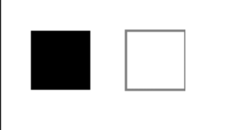
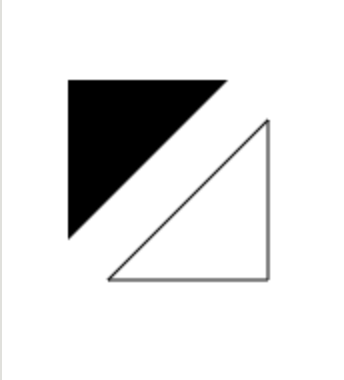
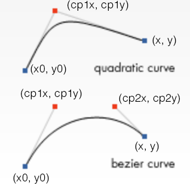

Базовая теория
Глава 4.3. Рисование в canvas
При использовании JavaScript-анимации можно изменять и дополнять контент DOM-структуры документа. Но сам HTML изначально не создавался для анимации, он рассчитан на статическое отображение информации. Для сложных анимаций и сцен с большим количеством объектов используют технологию canvas.
Canvas — это элемент HTML5, который предназначен для создания растрового изображения с помощью JavaScript.
<canvas id="demo"></canvas>
Элемент <canvas> имеет только два
атрибута: ширину (width)
и высоту (height), но они
необязательны и могут быть выставлены
с использованием свойств DOM. Если атрибуты
не установлены, по умолчанию ширина
canvas будет 300 px, а высота — 150 px.
Можно задать произвольные размеры в CSS,
но во время рендеринга изображение будет
масштабироваться в соответствии с его
размером и ориентацией.
Рендеринг содержимого (контекста)
Элемент canvas создаётся с фиксированным размером элемента для рисования, который может иметь один или несколько контекстов для рендеринга, создавая содержимое и манипулируя им для показа.
Холст изначально пустой и прозрачный. Для рисования прежде всего нужно получить доступ к контексту, на котором будет выполняться отрисовка объектов. Для этого canvas имеет метод getContext (), он принимает единственный параметр — один из типов контекста:
- 2d (стандартно) — двухмерный контекст;
- webgl использует 3D-контекст, который реализуют WebGL первой версии (OpenGL ES 2.0);
- webgl2 использует 3D-контекст WebGL второй версии (OpenGL ES 3.0).
Для 2D графики в этом разделе будем использовать метку 2d.
Рисование фигур
Теперь, установив окружение, можно погрузиться в детали того, как рисовать объекты в canvas.
Прямоугольник
В отличие от SVG, canvas поддерживает только одну примитивную фигуру: прямоугольник. Все другие фигуры создаются комбинацией одного или большего количества контуров (paths) — набором точек, соединённых в линии. Это не страшно, в ассортименте рисования контуров есть функции, с помощью которых можно составлять очень сложные фигуры.
Вот две функции рисования прямоугольников в canvas:
fillRect(x, y, width, height)— заполненный прямоугольник;strokeRect(x, y, width, height)— прямоугольный контур.
Каждая из этих функций принимает несколько параметров:
- x, y устанавливают положение верхнего левого угла прямоугольника относительно начала координат;
- width и height определяют размеры прямоугольника.
function draw() {
let canvas = document.getElementById('canvas');
if (canvas.getContext) {
let ctx = canvas.getContext('2d');
ctx.fillRect(20, 20, 50, 50);
ctx.strokeRect(100, 20, 50, 50);
}
}
Пример:

Контуры (path)
Остальные примитивные фигуры создаются контурами. Контур — это точки, которые соединяются в отрезки линий и образуют различные фигуры: изогнутые или нет, разной ширины, высоты или цвета. Контур (или субконтур) может быть закрытым.
Создание фигур с помощью контуров происходит в несколько шагов:
- Создать контур.
- Нарисовать нужную фигуру, используя команды рисования.
- Закрыть контур.
- Обвести или залить созданный контур для его отображения.
Первый шаг создания контура заключается в вызове функции beginPath (). Внутри содержатся контуры в виде набора субконтуров (линии, дуги и др.), которые вместе образуют фигуру. Каждый вызов этого метода очищает набор, и можно рисовать уже новые фигуры.
Второй шаг — вызов методов, определяемых видом контура, который нужно нарисовать. Их рассмотрим позднее.
Третий и необязательный шаг — вызов closePath (). Этот метод пытается закрыть фигуру, рисуя прямую линию из текущей точки в начальную. Если фигура уже была закрыта или является просто точкой, то функция ничего не делает.
При вызове fill () каждая открытая фигура закрывается автоматически, так что можно не использовать closePath (). Но это не работает в случае вызова stroke ().
Передвижение пера
moveTo () — полезная функция, которая ничего не рисует, но связана по смыслу с вышеописанными функциями. Её действие можно представить как отрыв (подъём) пера от бумаги и перемещение его в другое место:
- moveTo (x, y) перемещает «перо» в точку с координатами x и y.
При инициализации canvas или при вызове beginPath (), логично использовать функцию moveTo () для перемещения в точку начала рисования. Можно использовать moveTo () и для рисования несвязанного (незакрытого) контура.
Типы контуров
Линии
Для рисования прямых линий используйте метод lineTo ():
- lineTo (x, y) рисует линию из текущей позиции до точки, определённой x и y.
Этот метод принимает два аргумента x и y, они же — координаты конечной точки линии. Начальная точка зависит от ранее нарисованных путей, причём конечная точка предыдущего пути является начальной точкой следующего и т. д.
Пример ниже рисует два треугольника: один закрашен сплошным цветом, другой обведён контуром:
function draw() {
let canvas = document.getElementById('canvas');
if (canvas.getContext){
let ctx = canvas.getContext('2d');
// треугольник с заливкой
ctx.beginPath();
ctx.moveTo(25,25);
ctx.lineTo(105,25);
ctx.lineTo(25,105);
ctx.fill();
// треугольник с обводкой
ctx.beginPath();
ctx.moveTo(125,125);
ctx.lineTo(125,45);
ctx.lineTo(45,125);
ctx.closePath();
ctx.stroke();
}
}
Сперва вызовем beginPath (), чтобы начать рисовать путь новой фигуры. Затем используем метод moveTo (), чтобы переместить начальную точку в нужное положение. Ниже рисуются две линии, которые образуют две стороны треугольника, а функция closePath () или fill () соединяет конечную и начальную точки, образуя треугольник.

Дуги
Для рисования дуг и окружностей используются методы arc () и arcTo ():
- arc (x, y, radius, startAngle, endAngle, anticlockwise) — отрисовка дуги с центром в точке (x, y) и радиусом r, начиная с угла startAngle и заканчивая в endAngle в направлении против часовой стрелки anticlockwise (по умолчанию — по ходу движения часовой стрелки);
- arcTo (x1, y1, x2, y2, radius) — отрисовка дуги с заданными контрольными точками и радиусом, с соединением этих точек прямой линией.
Углы в функции arc () измеряют в радианах, а не в градусах. Для перевода градусов в радианы можно использовать JavaScript-выражение:
radians = (Math.PI/180)*degrees.
Кривые Безье
Следующий тип контуров — кривые Безье, доступные к тому же в кубическом и квадратичном вариантах. Обычно их используют при рисовании сложных составных фигур.
- quadraticCurveTo (cp1x, cp1y, x, y) — отрисовка квадратичной кривой Безье из текущей позиции «пера» в конечную точку с координатами x и y, координаты единственной контрольной точки: cp1x и cp1y;
- bezierCurveTo (cp1x, cp1y, cp2x, cp2y, x, y) — отрисовка кубической кривой Безье из текущей позиции «пера» в конечную точку с координатами x и y с использованием двух контрольных точек с координатами (cp1x, cp1y) и (cp2x, cp2y).

Чтобы задать начальную точку рисования кривой Безье x0, y0 используйте функцию moveTo ().
Создание комбинаций контуров и фигур
До сих пор в каждом примере использовался только один тип функции контуров для каждой фигуры. Однако нет никаких ограничений на количество или типы контуров, которые можно использовать для создания фигур. Давайте создадим набор известных игровых персонажей, комбинируя разные типы контуров:
Рисование текста
Контекст рендеринга canvas предлагает два метода рисования текста:
- fillText (text, x, y [, maxWidth]) вставляет заданный текст в положении (x, y). Опционально можно указать максимальную ширину;
- strokeText (text, x, y [, maxWidth]) вставляет контур заданного текста в положении (x, y). Так же можно указать максимальную ширину, опционально.
function draw() {
let ctx = document.getElementById('canvas').getContext('2d');
ctx.font = "48px serif";
ctx.fillText("Hello world", 10, 50);
ctx.strokeText("Hello world", 10, 100);
}
Кастомные шрифты нужно загрузить до начала рисования, иначе пользователь сперва увидит текст со стандартным шрифтом, пока не загрузится кастомный.
Измерение текста
Для измерения ширины текста без рисования его на canvas можно воспользоваться методом measureText (). Он возвращает объект TextMetrics, сообщающий ширину текста (px), когда он будет нарисован на canvas:
function draw() {
let ctx = document.getElementById('canvas').getContext('2d');
let text = ctx.measureText("foo"); // TextMetrics
text.width; // 16;
}
Рисование изображений
Импортирование изображений в canvas в основном состоит из двух этапов:
-
Создать или взять существующий в DOM-структуре объект HTMLImageElement. Также можно использовать изображение, дав на него ссылку URL.
-
Добавить полученный объект-изображение в контекст canvas.
Для отрисовки изображения на canvas используют функцию drawImage ()
- drawImage (image, x, y, width, height) добавляет на canvas изображение image, его левый верхний край находится в точке (x, y), ширина и высота задаётся параметрами width и height соответственно.
Рассмотрим пример, в котором создадим объект-изображение с помощью конструктора Image ():
let img = new Image(); // Создаёт новый элемент изображения
img.src = 'myImage.png'; // Устанавливает путь
Когда этот скрипт будет выполнен, изображение начнёт загружаться.
Если попытаться вызвать функцию drawImage () перед тем, как изображение загрузится, скрипт ничего не сделает (или может даже выдать исключение в старых браузерах). Поэтому необходимо использовать событие load, чтобы не пытаться сделать это прежде, чем изображение загрузится:
function draw() {
let ctx = document.getElementById('canvas').getContext('2d');
ctx.drawImage(img, 0, 0);
}
let img = new Image(); // Создаёт новое изображение
img.addEventListener("load", function() {
// Здесь отрисовка изображения выполняет функцию
draw();
}, false);
img.src = 'myImage.png'; // Устанавливает источник файла
Очистка контекста
Для этого используют функцию clearRect ().
clearRect (x, y, width, height) устанавливает прозрачный чёрный цвет для всех пикселей, расположенных внутри прямоугольника, заданного начальной точкой (x, y) и размерами (width, height), таким образом стирая любое ранее нарисованное содержимое.
Если вы обнаружили ошибку или неработающую ссылку, напишите об этом кураторам. Мы поправим.